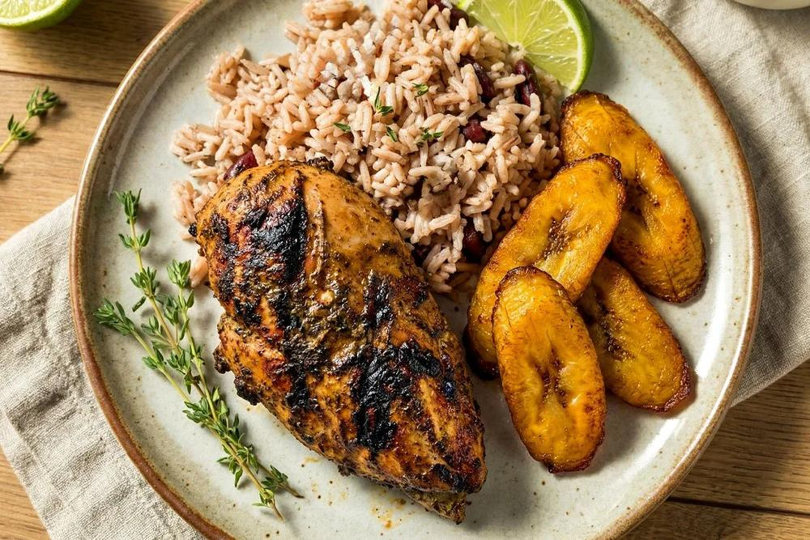
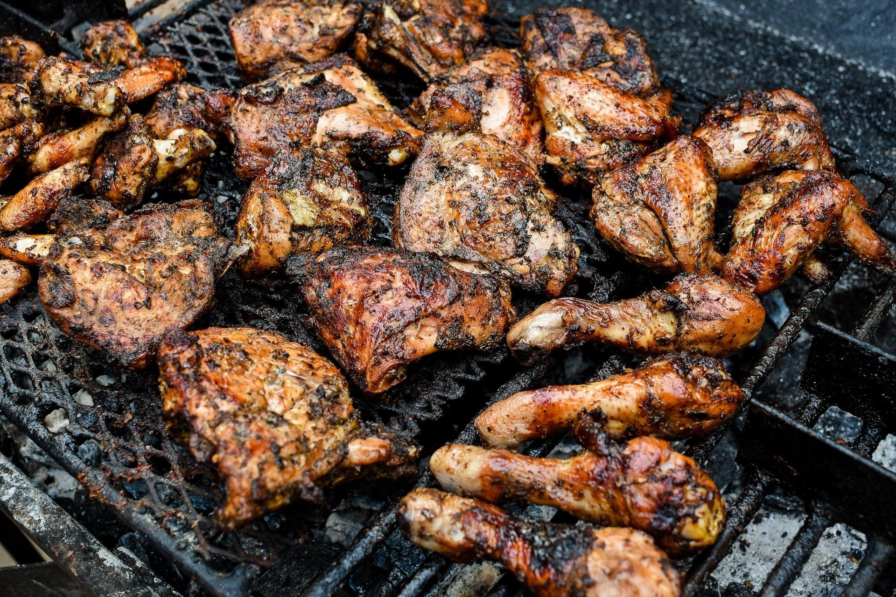
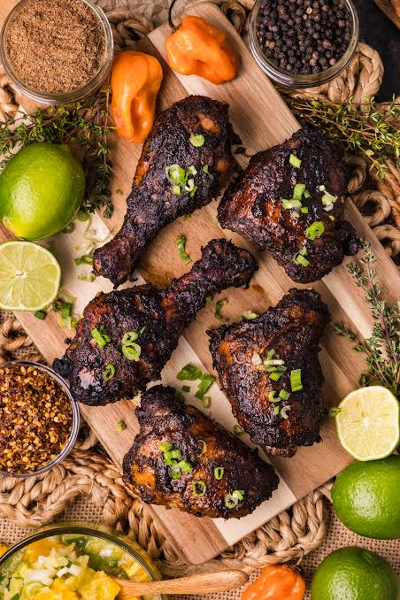

Jerk is more than just a seasoning. It is a traditional Jamaican cooking technique that brings together bold spices, fresh herbs, heat and smoky flavours.
The traditional method involves piercing the meat so the seasoning can penetrate deeper, allowing the flavours to develop throughout the meat.
Today, jerk refers to the seasoning, the marinade and the cooking technique itself. Whether prepared on a charcoal grill or over pimento wood, the goal is to achieve that distinctive Jamaican flavour.
A good jerk seasoning should have the right balance of heat, spice and flavour. It should have a kick without overpowering the other ingredients.
For a more traditional Jamaican flavour, use fresh Scotch bonnet peppers, scallions and thyme when preparing a wet jerk marinade.
Good jerk chicken is about flavour, not just heat.
This seasoning has a spicy kick without being overwhelmingly hot. Adjust the cayenne pepper to suit your taste.